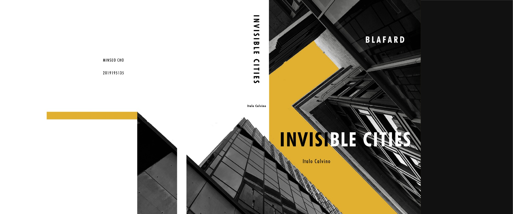

Editorial Design · 2020
Editorial Design for Invisible Cities by Italo Calvino
Editorial design for a fictional publishing imprint.

- Role
- Editorial designer
- Timeline
- Mar – Jun 2020
- Typefaces
- Futura · Book Antiqua
Design Direction
The redesign treats every spread as a different way of navigating a city. Dense passages alternate with generous negative space, while fragmented black-and-white photographs create changes in scale and perspective. A single ochre accent holds the publication together without making each city feel identical.
Editorial rhythm
Asymmetric grids let text and images expand, contract, and interrupt one another across the book.
Type pairing
Futura gives chapter and display elements a constructed quality; Book Antiqua keeps long passages readable.
Image system
Monochrome architectural photography is cropped and recomposed, punctuated by the ochre #e2b032.